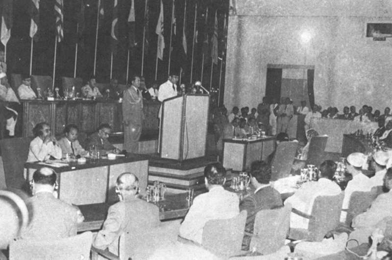
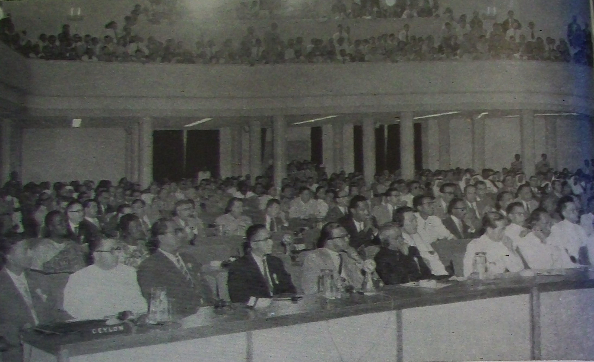
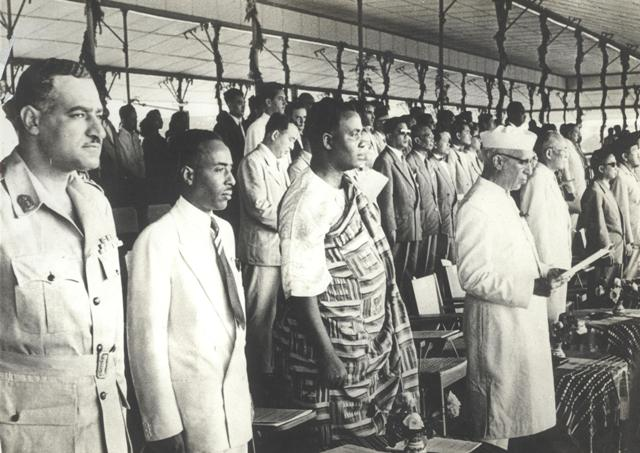

Pada 18 April 1955, Presiden Soekarno membuka sebuah konferensi di Gedung Merdeka, Bandung, dengan kalimat yang kemudian dikenang dunia: "Let a New Asia and a New Africa Be Born!" — "Our nations and countries are colonies no more. Now we are free, sovereign, and independent. We are again masters in our own house." Di hadapannya duduk para pemimpin 29 negara Asia dan Afrika — dari Nehru (India), Nasser (Mesir), hingga Zhou Enlai (China). Selama tujuh hari (18–24 April 1955), mereka menulis aturan main baru bagi dunia yang sedang terbelah Perang Dingin.

Dari Kolombo ke Bandung: Ide Indonesia
Ide konferensi ini lahir dari Konferensi Kolombo, 28 April–2 Mei 1954 (Sri Lanka), yang dihadiri lima perdana menteri: Sir John Kotelawala (Ceylon), U Nu (Burma), Jawaharlal Nehru (India), Mohammed Ali (Pakistan), dan Ali Sastroamidjojo (Indonesia). Di forum itulah Ali mengusulkan pertemuan yang lebih luas antara bangsa-bangsa Asia dan Afrika. Peserta Kolombo — yang awalnya skeptis — setuju, dan menugaskan Indonesia untuk menjajaki penyelenggaraannya.
Langkah lanjutannya: Konferensi Bogor, 28–29 Desember 1954. Kelima negara menjadi sponsor, menetapkan Bandung sebagai tuan rumah pada April 1955, dan menyusun daftar undangan. Pada 15 Januari 1955, undangan dikirim ke 25 negara. Federasi Afrika Tengah menolak — sehingga total yang hadir: 29 negara (23 Asia + 6 Afrika), mewakili lebih dari setengah penduduk dunia saat itu.
Bayangkan: Indonesia, yang proklamasinya baru berumur 10 tahun, menjadi motor dan tuan rumah pertemuan sebesar ini.
7 Hari Sebelum Dibuka: Pesawat Dibom
Tujuh hari sebelum konferensi dibuka, dunia dikejutkan insiden Kashmir Princess, 11 April 1955. Pesawat Air India Lockheed Constellation "Kashmir Princess" — carteran delegasi China dalam perjalanan Hong Kong–Jakarta — meledak di udara dan jatuh ke Laut China Selatan. Belasan orang tewas; hanya 3 awak yang selamat.
Target yang diyakini: Perdana Menteri Zhou Enlai. Ia lolos karena mengubah rencana perjalanannya di menit akhir — versi resmi menyebut operasi usus buntu darurat, sementara sejarawan Steve Tsang (Oxford) berargumen Zhou mungkin sudah mengetahui plotnya. Penyelidik meyakini bom waktu dipasang agen rahasia Kuomintang (KMT).
Catatan redaksi: klaim keterlibatan CIA dalam insiden ini hanya muncul di sumber-sumber partisan; penyelidikan arus utama menunjuk agen KMT. Kami tidak menuduh sepihak.

Dasasila Bandung: 10 Prinsip yang Ditulis Bersama
Konferensi berjalan dengan mekanisme: 2 hari sidang pleno, lalu dibagi 3 komite (politik, ekonomi, kebudayaan) yang bersidang tertutup selama 5 hari. Ketuanya: PM Ali Sastroamidjojo. Pesertanya sengaja beragam ideologi — negara pro-Barat (Filipina, Turki), kaum netralis, hingga kubu komunis (China, Vietnam Utara). Keberagaman itu justru menjadi kekuatannya.
Hasil terpentingnya: Dasasila Bandung — 10 prinsip yang diadopsi dengan suara bulat, menggabungkan Piagam PBB dan prinsip-prinsip Panchsheel. Intinya: penghormatan terhadap HAM, kedaulatan dan integritas teritorial, persamaan semua bangsa (besar maupun kecil), non-intervensi, penyelesaian sengketa secara damai, penolakan pakta pertahanan untuk kepentingan negara besar, dan penghormatan hukum internasional.
Ada nuansa yang sering luput: komunike KAA mengutuk kolonialisme "in all its manifestations" — dalam segala manifestasinya. Kalimat itu diam-diam juga menampar Uni Soviet di Eropa Timur. Bandung bukan sekadar anti-Barat; ia anti-dominasi, dari kubu manapun.

Dampaknya: Dari Bandung ke Gerakan Non-Blok
KAA menjadi cikal bakal ideologis Gerakan Non-Blok — yang resmi didirikan di Beograd, September 1961, atas inisiatif Tito (Yugoslavia), Nasser (Mesir), Nehru (India), Nkrumah (Ghana), dan Soekarno (Indonesia), "drawing on the principles agreed at the Bandung Conference". Konferensi juga menyuarakan dukungan untuk perjuangan Aljazair, Tunisia, Maroko, dan Palestina, serta mendorong kerja sama teknis timbal balik antar-negara berkembang.
Enam puluh tahun kemudian, semangat itu dihidupkan lagi: KTT Asia–Afrika 2015 (19–24 April 2015, Jakarta–Bandung) dihadiri 109 negara di bawah kepemimpinan Presiden Joko Widodo, menghasilkan Bandung Message 2015, Deklarasi Penguatan NAASP, dan Deklarasi Kemerdekaan Palestina. Gedung Merdeka kini menjadi Museum Konferensi Asia-Afrika.
Negara yang baru 10 tahun merdeka itu tidak meminta izin untuk memimpin — ia mengundang dunia, dan dunia datang.
Analisis: Dibaca Pakai Lensa Ketahanan Nasional
1. Convening power = kekuatan. Kemampuan mengumpulkan dan memimpin 29 negara — lebih dari setengah penduduk dunia — adalah aset ketahanan nasional. Diplomasi bukan pelengkap kebijakan luar negeri; ia adalah instrumen kuasa itu sendiri.
2. Bebas-aktif butuh isi, bukan sekadar netral. Dasasila Bandung adalah norma internasional yang ditulis bersama oleh Indonesia — bukan aturan orang lain yang ditandatangani. Ketahanan berarti kemampuan menulis aturan main: relevan untuk peran Indonesia di G20, ASEAN, dan diplomasi Global South hari ini.
3. Solidaritas Selatan–Selatan = leverage. 29 negara yang bersatu menjadi blok tawar terhadap dua adidaya. Pelajaran abadinya: negara berkembang yang terpecah mudah didikte; yang bersatu bisa menentukan harga — berlaku untuk isu dagang, iklim, hingga reformasi PBB.
Arsip & Referensi
Angka dan peristiwa di artikel ini diverifikasi silang dari sumber-sumber berikut:
- Wikipedia — "Konferensi Asia–Afrika", "Dasasila Bandung", "Non-Aligned Movement", "Air India Flight 300" (linimasa & angka, diverifikasi silang).
- MoMA Post — "Masters in Our Own House: Architecture in the Visual Culture of the Bandung Conference" (tanggal & kutipan pidato Soekarno).
- Kementerian Luar Negeri China — daftar peserta & mekanisme komite KAA.
- SamePassage.org — analisis Dasasila & nuansa "in all its manifestations".
- Cambridge / The China Quarterly — insiden Kashmir Princess (Steve Tsang).
- Aviation Safety Network — data penerbangan Kashmir Princess.
- Zenius, Kelasgarasi — latar Konferensi Kolombo & Bogor (diverifikasi silang).
Kredit foto arsip: Soekarno di podium — Kepustakaan Presiden (via Wikimedia Commons), public domain; sidang pembuka — Kementerian Luar Negeri RI (via Wikimedia Commons), public domain; para pemimpin — via Wikimedia Commons, public domain.
Catatan redaksi: KAA adalah cikal bakal ideologis Gerakan Non-Blok — bukan pendiri formalnya (NAM didirikan di Beograd 1961). Klaim keterlibatan CIA dalam insiden Kashmir Princess hanya dari sumber partisan dan tidak kami pakai. Jumlah korban insiden (16 vs 11 vs 19 menurut sumber berbeda) kami tulis sebagai "belasan".
Suka bedah kayak gini? Versi ringkasnya ada di Instagram & TikTok @jejakkuasa — follow biar nggak ketinggalan Indonesia di papan catur berikutnya.